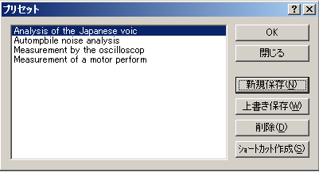

DSSF3 > RA > リファレンス
プリセット
プリセットとは、リアルタイムアナライザ内の設定値をすべて記憶する機能です。保存されたプリセットを読み出すことによって、記憶した時点のプログラムの状態が再現されます。いくつでも記憶可能で、各プリセット値に（識別のため）自由な名前とメモを記録できます。測定までの準備時間を短縮するだけではなく、間違いを減らします。面倒な較正や設定は、測定対象ごとにあらかじめ準備しておけば、それを読み出すだけで、誰でも簡単に測定システムを動かすことができます。
それとは別に実験単位に、設定を記憶しておいて、あるいは使用する人ごとに、いろいろな設定をプリセットにより記憶しておきその設定の操作画面を開きたい場合は、プリセット管理機能を使用して行います。DSSF3のすべての設定値をすべてを1パックとして任意の名前をつけて記憶させることができます。いくつでも登録可能です。その管理としては、プリセット操作画面で新規に登録したり、削除したり、登録内容の変更が自由です。これは、いろいろな測定を、組み合わせて行うとき、測定のたびに設定を神経を使いチェックする必要が無いので便利です。また測定システムを他人に使用させるとき、どの部分の設定を、もしも知らないうちに変更されても、そういう心配をしなくてもいいように、自分の正しい設定を残しておくのにも便利です。
また測定時の設定条件を後に記録として覚えておくのは、すべメモをとらなくてはならず実際問題として手間が大変ですが、この記録機能で残しておけば、いつも再現して、設定値を調べることができます。これらの機能は、通常の測定器というより、データベースの機能で、DSSF3では研究開発用のデータベースの測定時の設定値の自動記録機能を使用して、実現しています。

| 項目 |
説明 |
| リストボックス |
今までに保存されたプリセットの一覧が表示されます。 |
| ボタン |
説明 |
| OK |
選択したプリセットを適用します。全てのウィンドウの位置と設定内容は、プリセットを登録した時点の状態に設定されます。 |
| 閉じる |
何もせずにこのダイアログを閉じます。 |
| 新規保存 |
現在の全てのウィンドウの位置と状態をプリセットに新規に保存します。 |
| 上書き保存 |
選択したプリセットに、現在の全てのウィンドウの位置と状態を上書き保存します。 |
| 削除 |
選択したプリセットを削除します。 |
| ショートカット作成 |
選択したプリセットのショートカットをデスクトップに作成します。そのショートカットをクリックするだけで、プリセットしたウィンドウが開きます。 |
DSSF3 > RA > リファレンス